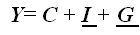
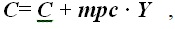
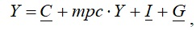
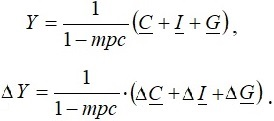
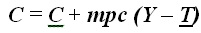
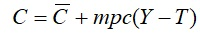
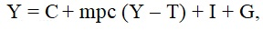
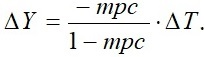

Мультипликатор автономных потребительских расходов – это коэффициент, который показывает, во сколько раз увеличился (сократился) совокупный доход при увеличении (сокращении) автономных потребительских расходов на единицу.
Мультипликатор инвестиционных расходов – это коэффициент, который показывает, во сколько раз увеличился (сократился) совокупный доход при увеличении (сокращении) инвестиционных на единицу.
Мультипликатор государственных закупок – это коэффициент, который показывает, во сколько раз увеличился (сократился) совокупный доход при увеличении (сокращении) государственных закупок на единицу.
Для алгебраического вывода мультипликатора государственных закупок (автономных потребительских расходов или инвестиционных расходов) добавим их величину в функцию совокупного дохода (выпуска) Y еще и G. Получим:

Поскольку функция потребления имеет вид:

подставим ее в наше уравнение:

перегруппируем и получим:

Таким образом, 1/(1 - mpc) представляет собой мультипликатор любого вида автономных расходов: потребительских, инвестиционных и государственных.
Мультипликатор автономных налогов, т.е. не зависящий от уровня дохода. Поскольку в простой кейнсианской модели предполагается, что налоги оказывают влияние на величину потребительских расходов, то с включением в наш анализ налогов меняется функция потребления, принимая вид:

Величина -mpc/(1 - mpc) и есть мультипликатор налогов. А поскольку (1 - mpc) есть не что иное, как mps (предельная склонность к сбережению), то мультипликатор налогов можно записать и как -mpc/mps .
Выведем мультипликатор автономных налогов алгебраически. Подставим функцию потребления:

в функцию национального дохода Y= С + I + G , получим:

откуда

Мультипликатор сбалансированного бюджета. Бюджет называется сбалансированным, если государственные закупки и налоги увеличиваются на одну и ту же величину. Выведем мультипликатор сбалансированного бюджета алгебраически. Сравним мультипликативный эффект, который дает изменение автономных расходов государства и налогов. Мультипликатор сбалансированного бюджета равен 1.
Таким образом, если государственные закупки и автономные налоги увеличиваются (сокращаются) на одну и ту же величину, то это ведет к росту (сокращению) совокупного дохода, причем ровно на величину роста (сокращения) государственных закупок и налогов.